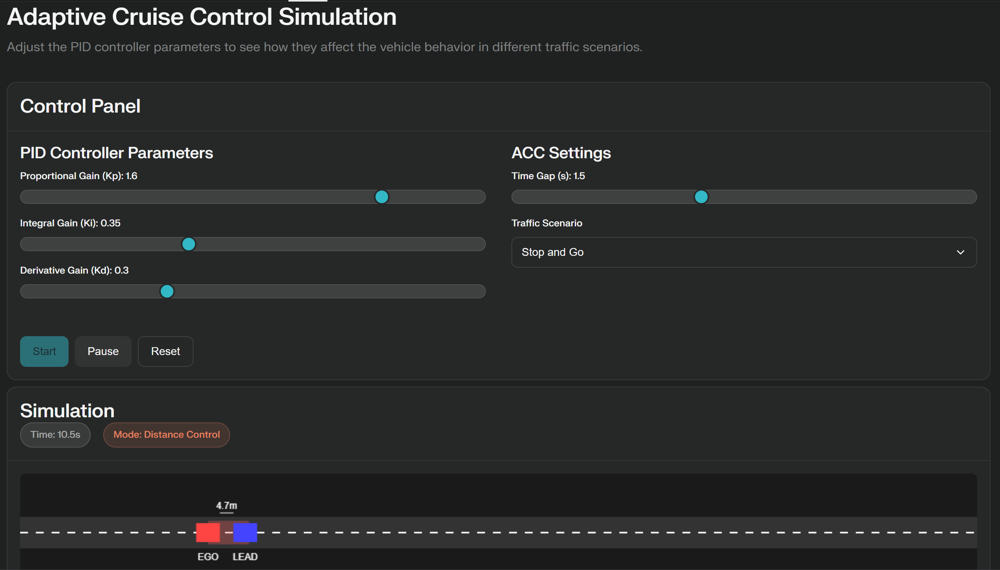

Adaptive Cruise Control using PID Control June 2025 – Present | Perplexity AI, PID Control, Python
Designed ACC system for stop-and-go and cruise scenarios. Tuned PID gains for smooth transitions and validated performance under dynamic lead vehicle behavior.

Autonomous Emergency Braking (AEB) System Calibration June 2025 – Present | Perplexity AI, AEB Logic, Python
Simulated AEB for collision avoidance. Calibrated thresholds using pedestrian crossing scenarios and verified real-time emergency braking.
Sensor Fusion Enhancement using nuScenes Dataset May 2025 – Present | nuScenes, OpenCV, LiDAR-Camera Fusion
Fused sensor data for object detection in dense traffic environments. Boosted classification accuracy and perception consistency.
LKA Scenario Simulation using CARLA May 2025 – Present | CARLA, Python, AV Control
Tested LKA activation based on lane centering. Refined steering logic and validated performance under real-world scenarios.
Motion Planning and Perception Analysis using Waymo Open Dataset May 2025 – Present | Waymo Dataset, Waymax, Forecasting
Performed trajectory prediction and behavior modeling. Derived insights on motion forecasting for safe urban AV operation.
Self-Aware AI vs Human Driving Study May 2025 – Present | Driving Data, AI Behavior
Compared AI actions with human driver responses to explore empathetic decision-making for AVs.
LiDAR Signal Distortion Analysis for ADAS May 2025 – Present | STAMTEC LiDAR, Python, Simulink
Tested blinking distortions on LiDAR and impact on ACC/LKA. Provided input for robust ADAS calibration.
LiDAR Sensor Placement and Detection Mar 2025 – Present | Simulink, MATLAB
Simulated sensor placements on vehicle roof. Improved perception coverage by 25% for road curvature.
Real-Time Object Tracking for Lane Assistance May 2025 – Present | OpenCV, Python
Developed algorithms for detecting dynamic/static objects. Reduced tracking error in crowded roads.
ADAS Level 2–3 Handover Scenario Analysis Jan 2025 – Present | Custom Driving Dataset, Python
Evaluated transitions between human and AI driving. Improved automation handoff and latency.
Low-Cost Object Detection & Digital Twin via V2V Jan 2025 – Apr 2025 | RPLIDAR, Camera, AWS 5G, ROS
Built a cost-effective LiDAR-camera system with V2V. Improved mapping latency, lowered costs by 40%.
Localization & Mapping with KITTI Dataset Sept 2024 – Dec 2024 | ROS, KITTI, OpenCV
Achieved centimeter-level accuracy for real-time LiDAR-based localization and detection.
Real-Time Battery Monitoring PCB Design Aug 2024 – Oct 2024 | EasyEDA, Sensor Integration
Designed PCB for voltage, current, and thermal monitoring in BMS setups.
EV & HEV Powertrain Simulation Oct 2023 – Dec 2023 | MATLAB, Simulink
Optimized energy flow in hybrid vehicle models. Improved drivetrain efficiency by 10%.
Dynamic Torque Switching in EV Motors Jan 2025 – Jun 2025 | Motor Control, Simulink
Studied torque switching strategies for lightweight EVs. Enhanced motor efficiency with reduced energy loss.
BLDC Motor Simulation for Torque Efficiency Oct 2024 – Dec 2024 | BLDC Modeling, Simulink
Simulated BLDC motors under various loads. Reduced torque ripple and improved stability.